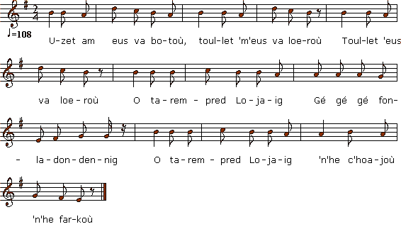

|
Lojaik (2ème version) 1. Uzet am eus va botoù, Toullet 'm'eus va loeroù Toullet 'm'eus va loeroù O tarempred Lojaig Gé gé gé fonladondennig O tarempred Lojaig 'N'he c'hoajoù 'n'he farkoù 2. 'N'hini welfe Lojaig O vonet en iliz Ganti frizennoù dantel na rozennoù bep tu 3. Ganti frizennoù dantel na rozennoù bep tu Neuz' zistro 'r baotred yaouank da sellet war o c'hiz 4. Neuz' glever 'r merc'hed yaouank o laret 'n'eil d'eben Houn'zh eo bravañ plac'h yaouank a zo 'barzh ar c'hanton 5. Neuz' lavar ar vourc'hizien d'an eil d'egil' an'e : "Bremañ emañ deut ar c'hiz da zougen kapoù du" 6. "Mez n'ouzon ket ar galleg, kennebeut ar c'hadañs, Na n'ouzon ket ar feson da barlant d'an noblañs 7. "Me 'm'bo 'r vatezhig vihan a ouio ar galleg A barlanto evidon wechigoù pa vo ret 8. Va gwisko, va diwisko, tenno din va loeroù Ha va lakay da gousket 'kichenik va aotrou." 9. N'ez eus na glav, na grizilh, nag erc'h war an douar A gement a lakefe daou zennig da 'n em gar! |
Louison (2ème version) 1. J'ai des trous aux chaussettes, Mes sabots sont usés Mes sabots sont usés D'avoir suivi Louisette Gai gai gai fonladondennig D'avoir suivi Louisette Par les champs et par les prés. 2. Quiconque voit Louisette Se rendre à l'assemblée, De dentelles couverte De roses toute parée, 3. De dentelles couverte Et de roses parée, Si c'est un gars, s'arrête, La mine transfigurée, 4. Et si ce sont des filles Elles disent: "Louison, Est avec sa mantille La plus belle du canton." 5. Le citadin qui tremble Dit à l'autre: "A présent La mode est, ce me semble, Aux capes noires, vraiment." 6. "J'ignore la cadence, Autant que le français. Parler à la noblesse, Je ne le saurai jamais. 7. "Qu'on me donne une bonne Qui parlera français Il suffit qu'on la sonne Lorsque je voudrai parler.. 8. Je veux qu'elle me vête, Et qu'elle ôte mes bas Qu'au lit elle me mette Lorsque Monsieur y sera." 9. Ni la pluie, ni la grêle Ni la neige jamais N'empêchent une belle Et un garçon de s'aimer. Traduction: Christian Souchon (c) 2011 |
Little Louise (2nd version) 1. I wear holes in my stockings And I wore out my clogs, And I wore out my clogs, Since I started a-wooing, Gay gay gay fonladondennig Since I started a-wooing, Chasing Lou through meads and bogs. 2. Everyone begs her graces When Louise to church walks In her dress trimmed with laces, About her are all the talks. 3. In her dress trimmed with laces, With roses in her hair, The lads give backward glances, Every lass an angry glare. 4. As she goes by, the lasses To one another tell: "I guess, no one surpasses Her in beauty: she's the belle." 5. All the town dwellers whisper In one another's ear: "You're in fashion and proper Now if you wear jet-black gear." 6. "I'm unaware of fashion And I do not speak French. A noble who hears Breton, Will keep as dumb as a tench. 7. Now, to speak French, if needed, I'll have a little maid And if I get confused I shall summon her for aid. 8. She shall dress and undress me Help me off with my shoes And to bed she shall see me Where I'll sleep with whom I'll choose." 9. Neither rain, nor hail ever, Nor the snow on the ground, Should discourage a lover Once a soul mate he has found. Translated by Christian Souchon (c) 2011 |
|
Le chant ci-dessus est une variante du précédent Une version de ce chant a été notée, sous le titre de "Jannédic", par la mère de La Villemarqué sur la dernière page de son cahier de recettes, "dans un jargon qui ne présente pas d'intérêt", au dire de Pierre, le fils du Barde, dépositaire de ce précieux document. Le premier carnet de collecte du Barde, publié par Donatien Laurent en contient une autre, intitulée "Losaïk" p.149. Les voici dans leur orthographe d'origine. On voit clairement les difficultés qu'éprouvait Mme de La Villemarqué à noter les chansons bretonnes qu'on lui chantait. Elle confond certaines consonnes initiales ou finales: /t/ avec /k/, /b/ avec /m/, /t/ ou /d/ avec /n/. Comme l'écrit D. Laurent, "On l'imagine difficilement déployer une véritable activité de collecteur" (D. Laurent, "Sources" p.275). Le couplet 4 de "Jannedic" se retrouve chez Luzel dans la partie IV de Yannik ar Bon-Garçon. 1. LEE BRETON. JANNEDIC Elle vient de se marié a un marquis de Guingam. 1. - Trom (Aotrou) Doué, Jannedic, petra et vessu gret, Pé vo ret mont da gosal gant et démésells? Né ousors (ouzoc'h) quet et galec, quénémeut et cadence Néquet gant ar breonec, et disquer et noblesse. 2 - Me bau (M'am bo) a vatès vien é ouiau er galec Ac ér barlento dimen (din-me) et quen et bo discouët Mé visquo mé divisquo , guisquo di me votou A mé laquo da gousquet e tichen (kichen) et noutrou (an aotrou) 3. Houentaine (C'hoantet) et nes Jannedic lais douch et vereuri Touec (touet) neuse et verounesse (ar verourez) ne resequet dé y. Et notrou pe ni clevat commence dé houari é goual bot Ac gant é ten bistolen et toras et ribot. 4. Nanni veris (Neb a weliz) Jannedic vouar et paes (pavez) Guimgann Gant i boutou marellet ac i seilen argant Et mouneut de pouderie dé préno ribot pri Et gostat tri ves (triwec'h) tinér et gas dé verouri. 5. Cetu pésse ét neuse gonnet é notrou et ch hoari et goal pot Et nesse (e-neus) prenec (prenet) et ribot névé et place et cos ribot |
The song above is a variant of the foregoing. A version of this song was noted and titled "Janedik", by La Villemarqué's mother on the last page of her recipe book, "a gobbledygook of minor importance", so said Pierre, the son of the Bard, who was the depository of this precious document. The Bard's first collecting book, edited by Donatien Laurent contains another version, titled "Losaïk" p.149. Here are both of them in the original spelling. It clearly appears that Mme de La Villemarqué was very ill at ease when putting down what was sung to her in Breton, since she mistakes certain final or initial consonants: /t/ for /k/, /b/ for /m/, /t/ or /d/ for /n/. As D. Laurent writes in "Sources, P.275, "She could hardly be supposed to act as a real song collector". Verse 4 of "Jannedic" is similar to part IV of Yannik ar Bon-Garçon in Luzel's collection. 2. LOISAIK 1. Me meus uset me boutoù, implijet me sachoù, O font da wel Loisaik dam parkoù, dam prajoù. 2. Pe vé an glao, an grisil, an erc'h war an douar Nen deus ket evit miret deus daou zen a nem gar. 3. Pell zo e-voac'h, Loisaik, e cass cahouet an tu De cas kaouet an amser de toughen c'habel du 4. Breman p'emaon dimeset, ha bet un den huel, Fachet aneb a garo, ma zougo ar c'habel. 5. - Aotroù Doue, Loisaïk, petra e vezo groet, Pe vo reit mont dre charos gant an duchentilet. 6. Ne nousoch ket ar galek kenebeut ar chadanç He ne ket ar bresonek a zisquer an noblanc. 7. Men beso eur vatesik a voiou ar galek Hag er reio all lec'h-men, ken am beso diskoet! 8. D'am visko d'am divisko da denno ma botou Da dommat din me guele dhe chanchet me loerou 9. An autrou dre he cusull mar vech offiget mat Mije bet enn dimezel hag e ve bet () stat. |